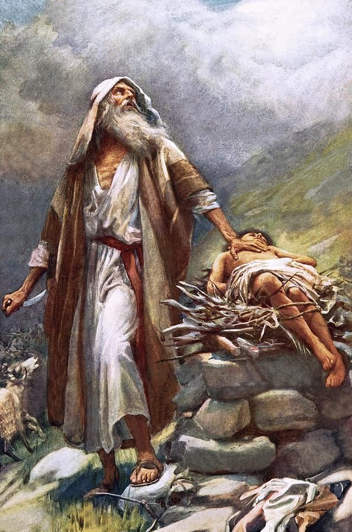
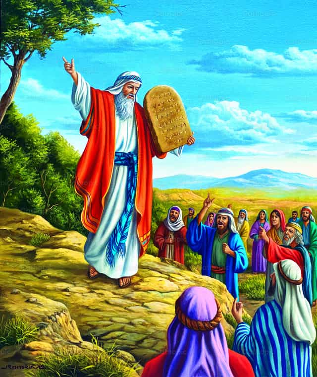
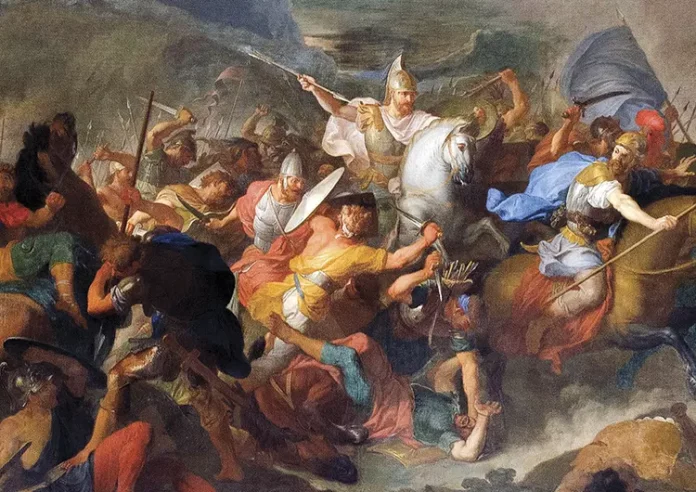
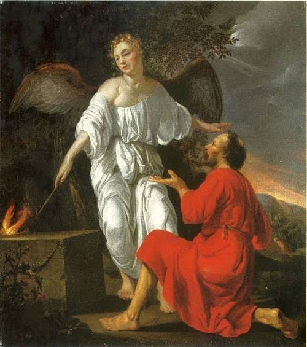
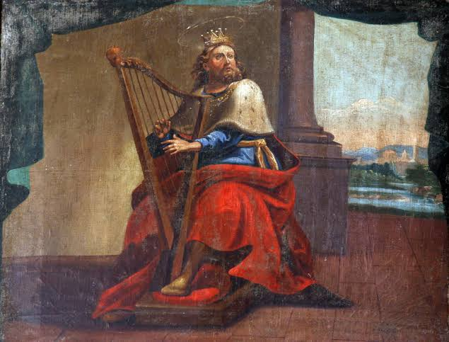
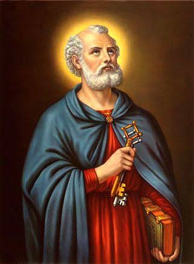
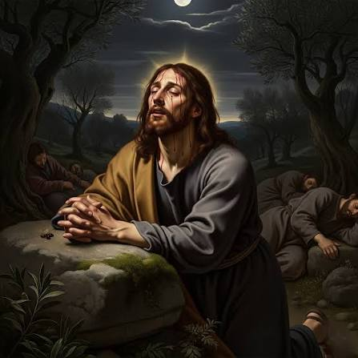
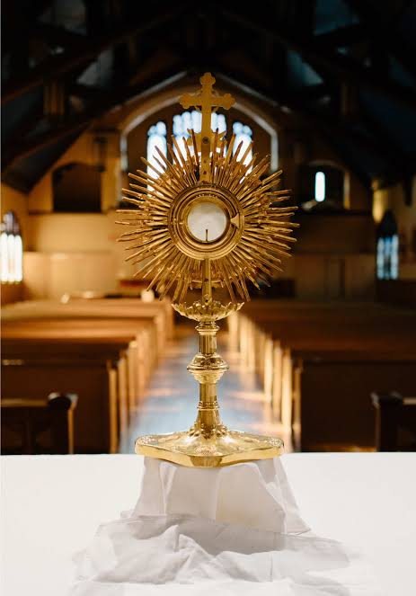

†
El miedo no siempre desaparece.
Pero Dios nunca deja de estar presente.
Toca para continuar
El miedo no siempre desaparece.
Pero Dios nunca deja de estar presente.
Toca para continuar
Séptimo Encuentro
Hola, Sophi.
Si hoy abriste este encuentro, quizá sea porque hay algo delante de ti que parece demasiado grande.
Tal vez no sea una montaña.
Tal vez sea una llamada que debes hacer.
Una decisión.
Una conversación.
Un cambio.
Una pérdida.
O simplemente un futuro que todavía no puedes ver.
Y eso está bien.
Porque la Biblia nunca presenta el miedo como un pecado en sí mismo.
Los grandes hombres y mujeres de Dios también sintieron miedo.
Abraham lo sintió.
Moisés lo sintió.
David lo sintió.
Pedro lo sintió.
Incluso Nuestro Señor quiso mostrarnos en Getsemaní toda la profundidad de la angustia humana.
La diferencia nunca estuvo en quién sintió miedo.
La diferencia estuvo en quién decidió confiar.
Por eso quiero invitarte a recorrer la historia de personas que caminaron con las piernas temblando, pero con el corazón sostenido por Dios.
Para cuando el miedo no te deje avanzar.
Recorre lentamente cada historia. Toca para comenzar.

†
†
†
†
†
†
†Toca fuera para volver al mapa
Séptimo Encuentro
Miedo
El punto de partida

†Cristo
El encuentro
Misión
El envío
Un testimonio
†
Salmo 23
El Señor es mi pastor, nada me falta.
Por prados de hierba fresca me apacienta,
hacia las aguas de reposo me conduce,
y repara mis fuerzas.
Me guía por el recto camino
en gracia de su nombre.
Aunque pase por valle tenebroso,
no temo ningún mal,
pues tú estás conmigo;
tu vara y tu cayado me sosiegan.
Tú mismo me preparas la mesa
delante de mis adversarios;
con aceite perfumas mi cabeza,
mi copa rebosa.
Sí, dicha y gracia me acompañan
todos los días de mi vida;
mi morada es la casa del Señor
por largo tiempo.
— Salmo 23. Biblia de Jerusalén
†
Oración de la entrega
«Toma, Señor, y recibe toda mi libertad,
mi memoria, mi entendimiento
y toda mi voluntad.
Todo mi haber y mi poseer
Tú me lo diste; a Ti, Señor, lo torno.
Todo es tuyo. Dispón de ello según tu voluntad.
Dame solamente tu amor y tu gracia,
que ésta me basta.»
— San Ignacio de Loyola, Ejercicios Espirituales